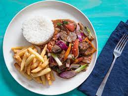

Lomo Saltado

Description
The only food better than chilaquiles. Lomo Saltado
The french thought they perfected carbs+meat with pomme frites but Lomo Saltado
adds soy sauce and the optional fried egg (montado style)
Ingredients
- Steak
- Red Onions
- Scalions
- Tomato
- Rice
- French Fries
Steps
- Cook steak in the pan
- Stir fry the veggies
- Add beef back to the pan with the veggies
- Add to plate with french fries and rice